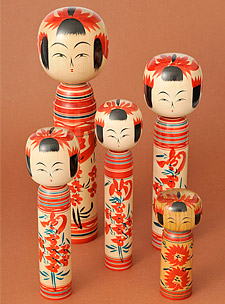
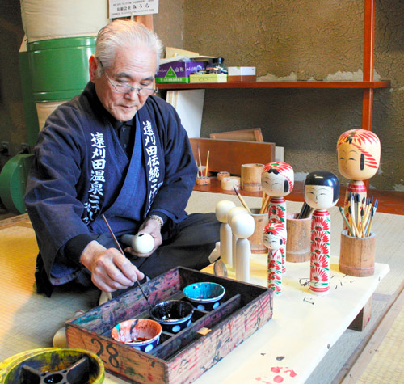

Traditional Japanese Baby Gifts
Kokeshi dolls
Kokeshi are Japanese wooden dolls that were traditionally given to children as toys. Designed to be easily grasped in the small hands of children, they are usually fairly thin, and of varying ergonomic shapes.
As Baby gifts
Another tradition emerged in Japan from these children's toys; When children are born, friends or relatives give life-sized kokeshi to the new baby as gifts. The dolls are made to the exact height and weight of the baby, and as the children grow, they can compare themselves to the doll to see how small they used to be.
Our kokeshi
In keeping with tradition, our kokeshi are turned by artisans from the original Tohoku region, where the kokeshi doll was born. The child's name, birth date, birth height, and birth weight, along with a personalized message, are all thoughtfully scribed onto the back of the kokeshi.